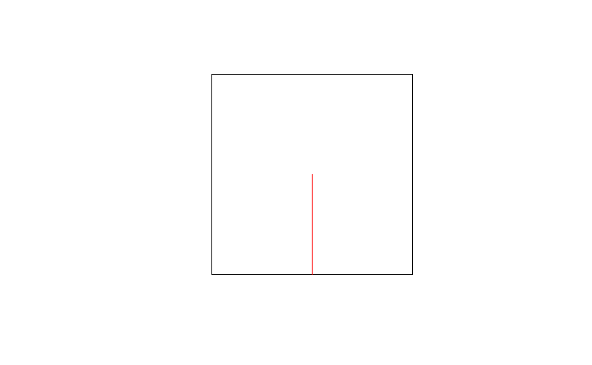
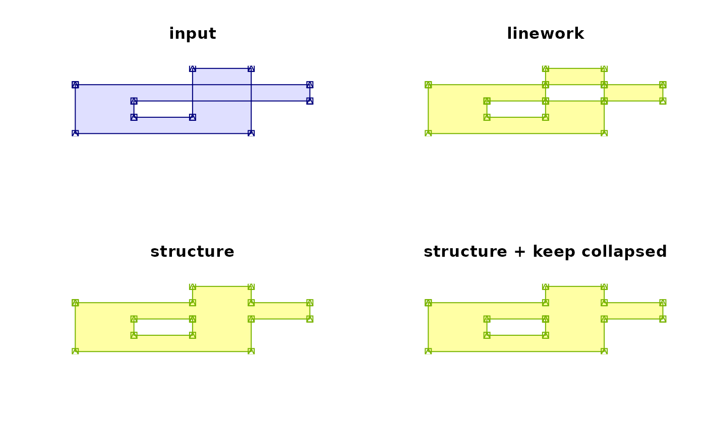
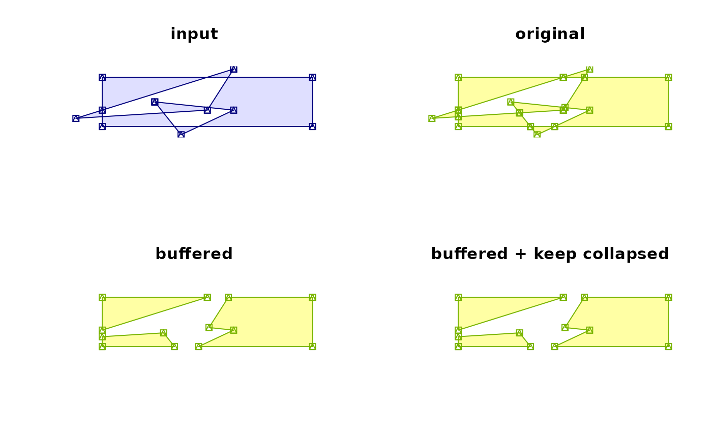
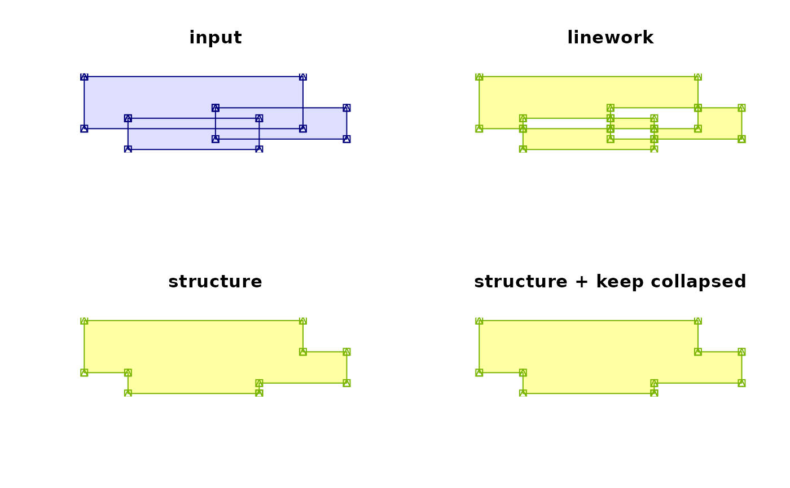
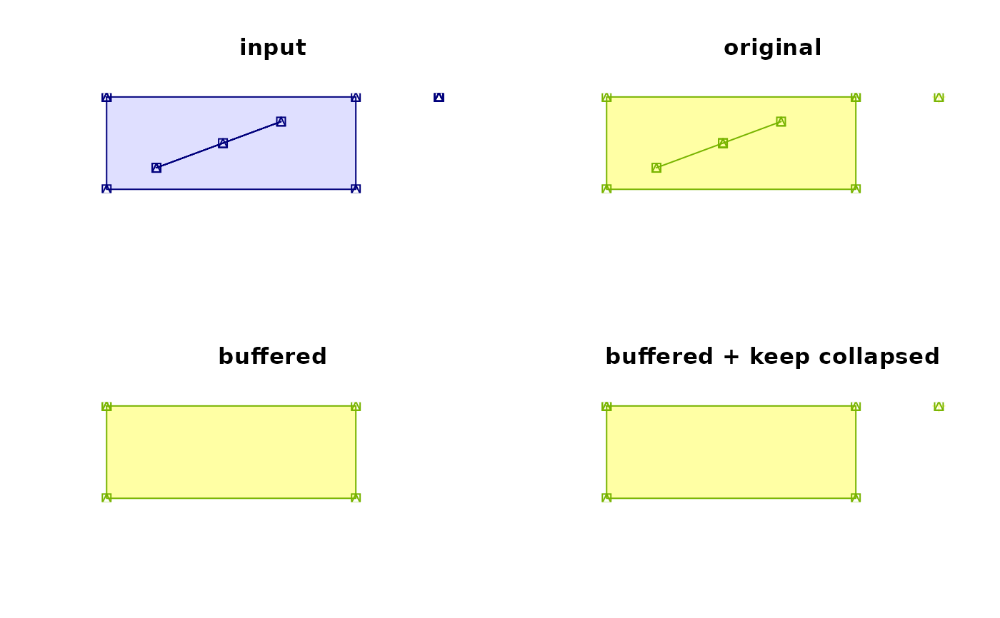
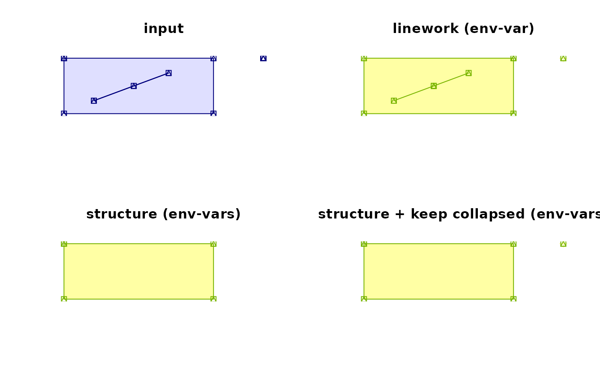

topo-unary-gMakeValid.RdFunction returns a valid geometry, not available before GEOS 3.8.0; from 3.10.0 two correction strategies
gMakeValid(spgeom, byid=FALSE, id = NULL, original=NULL, keepCollapsed=NULL)
| spgeom | sp object as defined in package sp |
|---|---|
| byid | Logical determining if the function should be applied across subgeometries (TRUE) or the entire object (FALSE) |
| id | Character vector defining id labels for the resulting geometries, if unspecified returned geometries will be labeled based on their parent geometries' labels. |
| original | default NULL; if GEOS < 3.10.0, TRUE, if GEOS >= 3.10.0, either set directly or taken from environment variable |
| keepCollapsed | default NULL; If GEOS >= 3.10.0 and |
Returns a valid geometry or collection of geometries of different types. For details on the buffered geometry fixer, see links from https://github.com/r-spatial/sf/issues/1655.
Roger Bivand
# Based on test geometries from sf run <- FALSE if (version_GEOS0() >= "3.8.0") run <- TRUE if (run) { X <- readWKT("POLYGON ((0 0, 0.5 0, 0.5 0.5, 0.5 0, 1 0, 1 1, 0 1, 0 0))") gIsValid(X) }#> Warning: Self-intersection at or near point 0.5 0#> [1] FALSE#> [1] "SpatialPolygons" #> attr(,"package") #> [1] "sp"#> [1] "1"#> [1] TRUE#> [1] "SpatialCollections" #> attr(,"package") #> [1] "rgeos"#> [1] "1"#> [1] "1"run <- FALSE if (version_GEOS0() >= "3.10.0") run <- TRUE if (run) { JTSplot <- function(x, fill="grey90", pts="black", main="", xlim, ylim) { if (inherits(x, "SpatialCollections")) { xl <- xp <- xpl <- NULL if (!is.null(slot(x, "lineobj"))) xl <- slot(x, "lineobj") if (!is.null(slot(x, "pointobj"))) xp <- slot(x, "pointobj") if (!is.null(slot(x, "polyobj"))) xpl <- slot(x, "polyobj") if (is.null(xl)) xl <- as(xpl, "SpatialLines") else xl <- rbind(xl, as(xpl, "SpatialLines")) if (is.null(xp)) xp <- as(xl, "SpatialPoints") else xp <- rbind(xp, as(xl, "SpatialPoints")) } else { xl <- as(x, "SpatialLines") xp <- as(xl, "SpatialPoints") } plot(coordinates(xp), type="n", main=main, xlab="", ylab="", axes=FALSE, xlim=xlim, ylim=ylim) plot(x, col=fill, border="transparent", add=TRUE, xlim=xlim, ylim=ylim) plot(xl, col=pts, add=TRUE, xlim=xlim, ylim=ylim) plot(xp, col=pts, add=TRUE, pch=14, xlim=xlim, ylim=ylim) } } if (run) { X <- readWKT(paste0("POLYGON ((10 70, 90 70, 90 50, 30 50, 30 30, ", "50 30, 50 90, 70 90, 70 10, 10 10, 10 70))", sep="")) bb <- bbox(X) opar <- par(mfrow=c(2,2)) JTSplot(X, fill="#dfdfff", pts="#00007c", main="input", xlim=bb[1,], ylim=bb[2,]) JTSplot(gMakeValid(X, original=TRUE), fill="#ffffa4", pts="#78b400", main="original", xlim=bb[1,], ylim=bb[2,]) JTSplot(gMakeValid(X, original=FALSE), fill="#ffffa4", pts="#78b400", main="buffered", xlim=bb[1,], ylim=bb[2,]) JTSplot(gMakeValid(X, original=FALSE, keepCollapsed=TRUE), fill="#ffffa4", pts="#78b400", main="buffered + keep collapsed", xlim=bb[1,], ylim=bb[2,]) par(opar) }if (run) { X <- readWKT(paste0("POLYGON ((10 70, 90 70, 90 10, 10 10, 10 70), ", "(60 80, 50 30, 0 20, 10 30, 60 80), (30 40, 60 30, 40 0, 30 40))", sep="")) bb <- rbind(c(0, 90), c(0, 80)) opar <- par(mfrow=c(2,2)) JTSplot(X, fill="#dfdfff", pts="#00007c", main="input", xlim=bb[1,], ylim=bb[2,]) JTSplot(gMakeValid(X, original=TRUE), fill="#ffffa4", pts="#78b400", main="original", xlim=bb[1,], ylim=bb[2,]) JTSplot(gMakeValid(X, original=FALSE), fill="#ffffa4", pts="#78b400", main="buffered", xlim=bb[1,], ylim=bb[2,]) JTSplot(gMakeValid(X, original=FALSE, keepCollapsed=TRUE), fill="#ffffa4", pts="#78b400", main="buffered + keep collapsed", xlim=bb[1,], ylim=bb[2,]) par(opar) }if (run) { X <- readWKT(paste0("MULTIPOLYGON (((10 90, 60 90, 60 40, 10 40, 10 90)), ", "((40 60, 70 60, 70 30, 40 30, 40 60)), ((20 50, 50 50, 50 20, 20 20, 20 50)))", sep="")) bb <- bbox(X) opar <- par(mfrow=c(2,2)) JTSplot(X, fill="#dfdfff", pts="#00007c", main="input", xlim=bb[1,], ylim=bb[2,]) JTSplot(gMakeValid(X, original=TRUE), fill="#ffffa4", pts="#78b400", main="original", xlim=bb[1,], ylim=bb[2,]) JTSplot(gMakeValid(X, original=FALSE), fill="#ffffa4", pts="#78b400", main="buffered", xlim=bb[1,], ylim=bb[2,]) JTSplot(gMakeValid(X, original=FALSE, keepCollapsed=TRUE), fill="#ffffa4", pts="#78b400", main="buffered + keep collapsed", xlim=bb[1,], ylim=bb[2,]) par(opar) }if (run) { X <- readWKT(paste0("MULTIPOLYGON (((10 40, 40 40, 40 10, 10 10, 10 40), ", "(16 17, 31 32, 24 25, 16 17)), ((50 40, 50 40, 50 40, 50 40, 50 40)))", sep="")) bb <- bbox(X) opar <- par(mfrow=c(2,2)) JTSplot(X, fill="#dfdfff", pts="#00007c", main="input", xlim=bb[1,], ylim=bb[2,]) JTSplot(gMakeValid(X, original=TRUE), fill="#ffffa4", pts="#78b400", main="original", xlim=bb[1,], ylim=bb[2,]) JTSplot(gMakeValid(X, original=FALSE), fill="#ffffa4", pts="#78b400", main="buffered", xlim=bb[1,], ylim=bb[2,]) JTSplot(gMakeValid(X, original=FALSE, keepCollapsed=TRUE), fill="#ffffa4", pts="#78b400", main="buffered + keep collapsed", xlim=bb[1,], ylim=bb[2,]) par(opar) }if (run) { X <- readWKT(paste0("MULTIPOLYGON (((10 40, 40 40, 40 10, 10 10, 10 40), ", "(16 17, 31 32, 24 25, 16 17)), ((50 40, 50 40, 50 40, 50 40, 50 40)))", sep="")) bb <- bbox(X) opar <- par(mfrow=c(2,2)) JTSplot(X, fill="#dfdfff", pts="#00007c", main="input", xlim=bb[1,], ylim=bb[2,]) Sys.setenv("GEOS_MAKE_VALID"="ORIGINAL") JTSplot(gMakeValid(X), fill="#ffffa4", pts="#78b400", main="original (env-var)", xlim=bb[1,], ylim=bb[2,]) Sys.setenv("GEOS_MAKE_VALID"="BUFFERED") Sys.setenv("GEOS_MAKE_VALID_KEEPCOLLAPSED"="FALSE") JTSplot(gMakeValid(X), fill="#ffffa4", pts="#78b400", main="buffered (env-vars)", xlim=bb[1,], ylim=bb[2,]) Sys.setenv("GEOS_MAKE_VALID_KEEPCOLLAPSED"="TRUE") JTSplot(gMakeValid(X), fill="#ffffa4", pts="#78b400", main="buffered + keep collapsed (env-vars)", xlim=bb[1,], ylim=bb[2,]) par(opar) Sys.unsetenv("GEOS_MAKE_VALID") Sys.unsetenv("GEOS_MAKE_VALID_KEEPCOLLAPSED") }